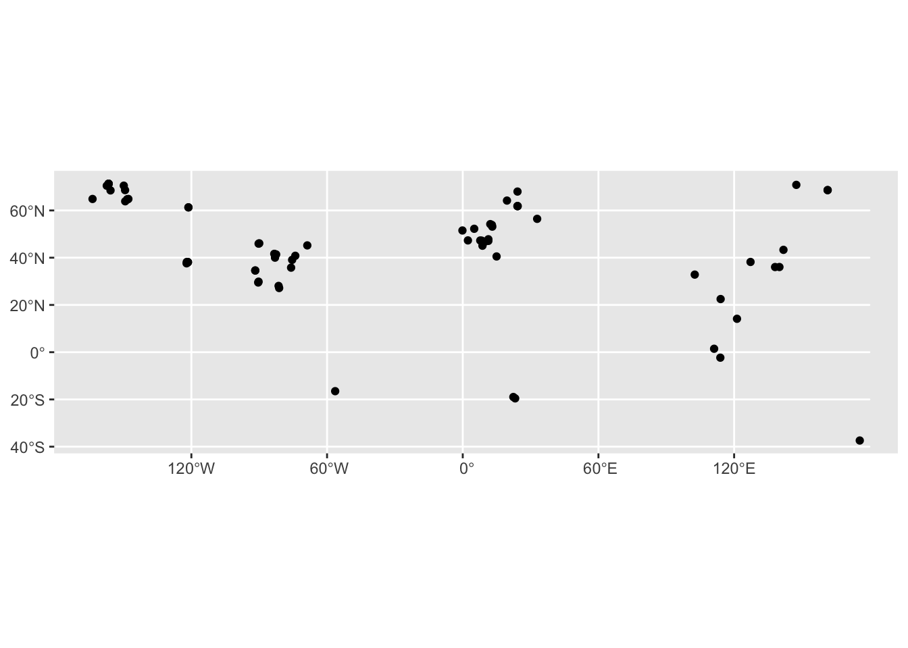
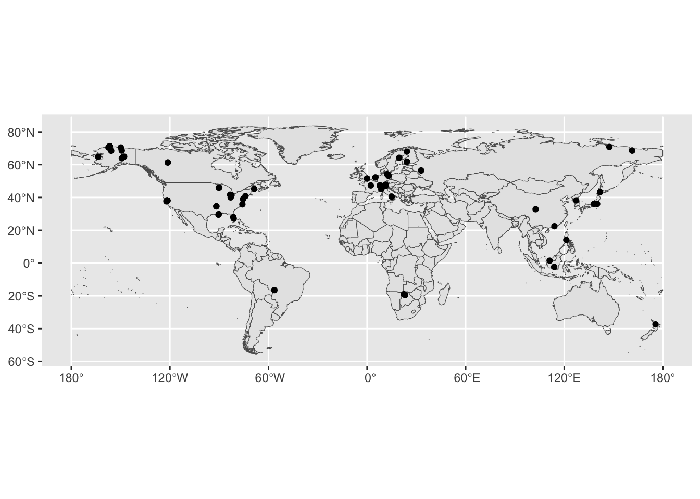
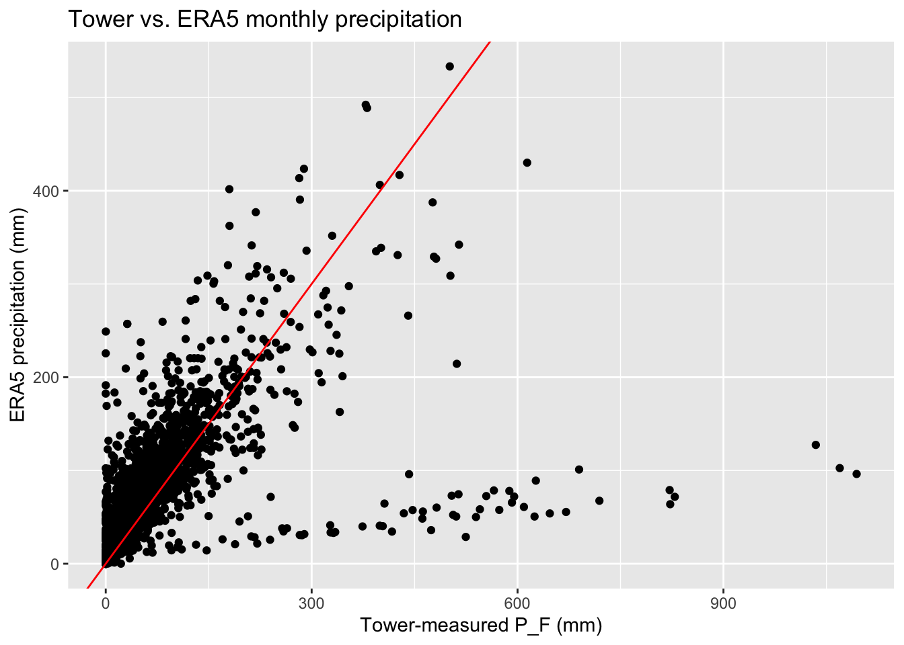
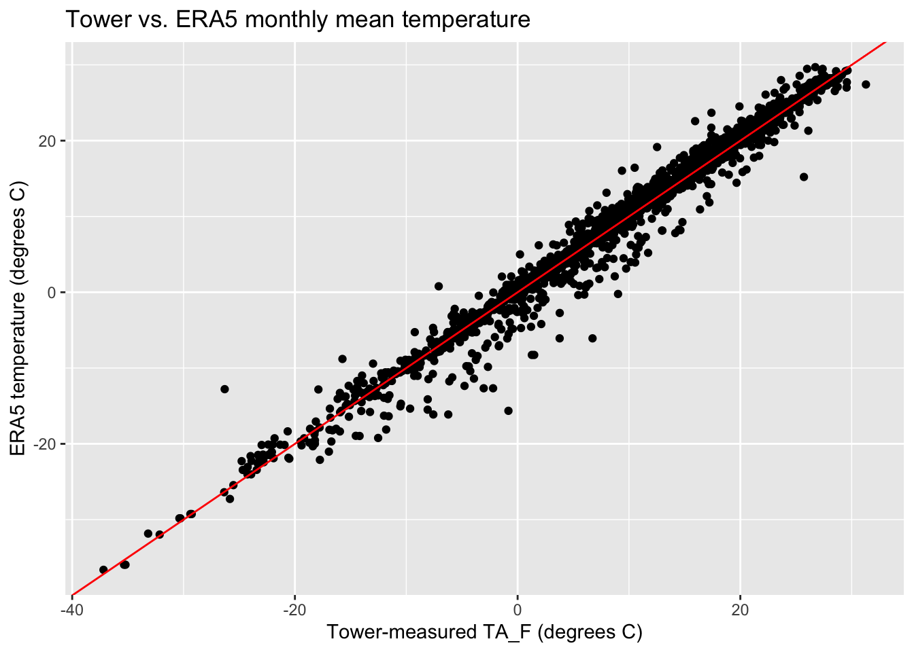

install.packages("ecmwfr")
library(ecmwfr)
wf_set_key(key = "paste-your-personal-access-token-here")Introduction to Data Integration in R
Data analysis often requires combining data from multiple sources, such as files, databases, APIs, or web scraping. R is a powerful and flexible tool for data integration, but it can also pose some challenges and pitfalls. In this workshop, you will learn some of the best ways to integrate data from multiple sources in R.
Getting a Climate Data Store (CDS) API key
Later in this workshop you’ll download real historical climate data (ERA5) from the Copernicus Climate Data Store (CDS). This requires a free personal account and API key, separate from anything else in this course, so set it up now — it can take a few minutes for the account to activate.
- Create a free account at https://cds.climate.copernicus.eu/.
- Once logged in, open your user profile page and copy your Personal Access Token — this is your API key.
- In R, register it once per computer (you’ll install the
ecmwfrpackage later in this workshop, but you can do it now too):
ecmwfr stores the key in your system’s secure credential manager, so you only need to do this once — every future R session on this computer will use it automatically.
WarningNever save your API key in a script
Type your key directly into the R console (or a chunk you run once and then delete), not into a .qmd file you save or push to GitHub. Treat it like a password — if it’s ever exposed, regenerate it from your CDS profile page.
Workshop Goals:
- Understand techniques for data Integration.
- Obtain information from different data sources.
- Combine tabular and vector data.
- Combine tabular and raster data.
- Combine tabular data by an ID and time.
Choose the right package
R has many packages that can help you import, merge, and manipulate data from different sources. Some of the most popular and useful ones for tables include readr, dplyr, tidyr, and purrr. These packages are part of the tidyverse, a collection of packages that share a consistent and coherent syntax and philosophy for data analysis. For spatial data, the sf and terra packages are useful.
| Type of Data | Library |
|---|---|
| Tabular | tidyverse |
| Vector | sf |
| Raster | terra |
Use pipes and functions
One of the best features of the tidyverse is the pipe operator (%>%), which allows you to chain multiple functions together and pass the output of one function as the input of the next one. This way, you can create a data integration pipeline that is clear and logical, and that avoids intermediate variables and nested functions.
Check and validate data
Data integration can introduce errors or inconsistencies in your data, such as duplicates, mismatches, outliers, or invalid values. Therefore, it is important to check and validate your data before and after you integrate it from multiple sources. You can use various tools and techniques to do this, such as summary statistics, data visualization, data profiling, or data quality rules.
In this workshop you will begin to extract information about the FLUXNET CH4 tower sites.
Install Packages:
install.packages("zoo")
install.packages("rnaturalearth")
install.packages("ecmwfr")
install.packages("lubridate")Load Libraries:
library(sf)
library(terra)
library(tidyverse)
library(ggplot2)
library(rnaturalearth)
library(zoo)
library(ecmwfr)
library(lubridate)Integrating information from simple features
Import the file FluxNet_Sites_2024.csv and call it fluxnet_sites
fluxnet_sites <- read.csv("data/FluxNet_Sites_2024.csv")This dataset includes:
| Column Name | Description |
|---|---|
| SITE_ID | Unique site id |
| SITE_NAME | Site name |
| FLUXNET2015 | License information for the data for the two FLUXNET Products |
| FLUXNET-CH4 | License information for the data for the two FLUXNET Products |
| LOCATION_LAT | Location information |
| LOCATION_LONG | Location information |
| LOCATION_ELEV | Elevation in meters |
| IGBP | Vegetation type |
| MAT | Mean annual temperature in Celsius |
| MAP | Mean annual precipitation in mm |
Subset file to include only sites measuring methane:
fluxnet_ch4 <- fluxnet_sites %>% filter(FLUXNET.CH4 == "CC-BY-4.0")Now that you have all of the sites measuring methane, convert fluxnet_ch4 to a sf and call it fluxnet_ch4_sf:
fluxnet_ch4_sf <- st_as_sf(x = fluxnet_ch4,
coords = c("LOCATION_LONG", "LOCATION_LAT"),
crs = 4326)
ggplot(data = fluxnet_ch4_sf) + geom_sf()
Check the class and that the geometry is valid:
class(fluxnet_ch4_sf)[1] "sf" "data.frame"st_is_valid(fluxnet_ch4_sf) [1] TRUE TRUE TRUE TRUE TRUE TRUE TRUE TRUE TRUE TRUE TRUE TRUE TRUE TRUE TRUE
[16] TRUE TRUE TRUE TRUE TRUE TRUE TRUE TRUE TRUE TRUE TRUE TRUE TRUE TRUE TRUE
[31] TRUE TRUE TRUE TRUE TRUE TRUE TRUE TRUE TRUE TRUE TRUE TRUE TRUE TRUE TRUE
[46] TRUE TRUE TRUE TRUE TRUE TRUE TRUE TRUE TRUE TRUE TRUE TRUE TRUE TRUE TRUE
[61] TRUE TRUE TRUE TRUE TRUE TRUE TRUE TRUE TRUE TRUE TRUE TRUE TRUE TRUE TRUE
[76] TRUE TRUE TRUE TRUECreate a global sf and extract the country into the sf
world_sf <- ne_countries(scale = "medium", returnclass = "sf") %>%
filter(continent %in% c("Europe", "Asia", "North America", "South America", "Africa", "Oceania"))
st_is_valid(world_sf) [1] TRUE TRUE TRUE TRUE TRUE TRUE TRUE TRUE TRUE TRUE TRUE TRUE TRUE TRUE TRUE
[16] TRUE TRUE TRUE TRUE TRUE TRUE TRUE TRUE TRUE TRUE TRUE TRUE TRUE TRUE TRUE
[31] TRUE TRUE TRUE TRUE TRUE TRUE TRUE TRUE TRUE TRUE TRUE TRUE TRUE TRUE TRUE
[46] TRUE TRUE TRUE TRUE TRUE TRUE TRUE TRUE TRUE TRUE TRUE TRUE TRUE TRUE TRUE
[61] TRUE TRUE TRUE TRUE TRUE TRUE TRUE TRUE TRUE TRUE TRUE TRUE TRUE TRUE TRUE
[76] TRUE TRUE TRUE TRUE TRUE TRUE TRUE TRUE TRUE TRUE TRUE TRUE TRUE TRUE TRUE
[91] TRUE TRUE TRUE TRUE TRUE TRUE TRUE TRUE TRUE TRUE TRUE TRUE TRUE TRUE TRUE
[106] TRUE TRUE TRUE TRUE TRUE TRUE TRUE TRUE TRUE TRUE TRUE TRUE TRUE TRUE TRUE
[121] TRUE TRUE TRUE TRUE TRUE TRUE TRUE TRUE TRUE TRUE TRUE TRUE TRUE TRUE TRUE
[136] TRUE TRUE TRUE TRUE TRUE TRUE TRUE TRUE TRUE TRUE TRUE TRUE TRUE TRUE TRUE
[151] TRUE TRUE TRUE TRUE TRUE TRUE TRUE TRUE TRUE TRUE TRUE TRUE TRUE TRUE TRUE
[166] TRUE TRUE TRUE TRUE TRUE TRUE TRUE TRUE TRUE TRUE TRUE TRUE TRUE TRUE TRUE
[181] TRUE TRUE TRUE TRUE TRUE TRUE TRUE TRUE TRUE TRUE TRUE TRUE TRUE TRUE TRUE
[196] TRUE TRUE TRUE TRUE TRUE TRUE TRUE TRUE TRUE TRUE TRUE TRUE TRUE TRUE TRUE
[211] TRUE TRUE TRUE TRUE TRUE TRUE TRUE TRUE TRUE TRUE TRUE TRUE TRUE TRUE TRUE
[226] TRUE TRUE TRUE TRUE TRUE TRUE TRUE TRUEMake the CRS match:
fluxnet_ch4_sf <- st_transform(fluxnet_ch4_sf, crs = 4087)
world_sf <- st_transform(world_sf, crs = 4087) %>% st_make_valid()
ggplot() + geom_sf(data = world_sf) + geom_sf(data = fluxnet_ch4_sf)
Use st_intersection to extract the country of each tower site. A straight st_intersection() can return more or fewer rows than you started with (a point can sit exactly on a shared border and match two polygons, or fall outside all of them), so join back on SITE_ID instead of assigning the result directly:
country_lookup <- st_intersection(world_sf, fluxnet_ch4_sf) %>%
st_drop_geometry() %>%
select(SITE_ID, name) %>%
distinct(SITE_ID, .keep_all = TRUE)Warning: attribute variables are assumed to be spatially constant throughout
all geometriesfluxnet_ch4_sf <- fluxnet_ch4_sf %>%
left_join(country_lookup, by = "SITE_ID") %>%
rename(country = name)
fluxnet_ch4_sf$country [1] "Austria" "Brazil"
[3] "Botswana" "Botswana"
[5] "Canada" "Canada"
[7] "Switzerland" "Switzerland"
[9] "Switzerland" "China"
[11] "Germany" "Germany"
[13] "Germany" "Germany"
[15] "Finland" "Finland"
[17] "Finland" "Finland"
[19] "France" "Hong Kong"
[21] "Indonesia" "Italy"
[23] "Italy" "Japan"
[25] "Japan" "Japan"
[27] "South Korea" "Malaysia"
[29] "Netherlands" "New Zealand"
[31] "Philippines" "Russia"
[33] "Russia" "Russia"
[35] "Russia" "Sweden"
[37] "United Kingdom" "United States of America"
[39] "United States of America" "United States of America"
[41] "United States of America" "United States of America"
[43] "United States of America" "United States of America"
[45] "United States of America" "United States of America"
[47] "United States of America" "United States of America"
[49] "United States of America" "United States of America"
[51] "United States of America" "United States of America"
[53] "United States of America" "United States of America"
[55] "United States of America" "United States of America"
[57] "United States of America" "United States of America"
[59] "United States of America" "United States of America"
[61] "United States of America" NA
[63] "United States of America" "United States of America"
[65] "United States of America" "United States of America"
[67] "United States of America" "United States of America"
[69] NA NA
[71] "United States of America" "United States of America"
[73] "United States of America" "United States of America"
[75] "United States of America" "United States of America"
[77] "United States of America" "United States of America"
[79] "United States of America"Integrating information from rasters
Import the file GlobalSoil_grids.tif :
soil <- terra::rast("data/GlobalSoil_grids.tif")
soilclass : SpatRaster
size : 18000, 43200, 3 (nrow, ncol, nlyr)
resolution : 0.008333333, 0.008333333 (x, y)
extent : -180, 180, -60, 90 (xmin, xmax, ymin, ymax)
coord. ref. : lon/lat WGS 84 (EPSG:4326)
source : GlobalSoil_grids.tif
names : BulkDensity, PH, Nitrogen
min values : 0.1, 3.5, 0
max values : 1.8, 10, 28.299999
unit : kg dm-3, H2O, kg-1Transform fluxnet_ch4_sf to the same CRS as soil:
fluxnet_ch4_sf <- st_transform(fluxnet_ch4_sf, crs = crs(soil))
fluxnet_ch4_sfSimple feature collection with 79 features and 9 fields
Geometry type: POINT
Dimension: XY
Bounding box: xmin: -163.7002 ymin: -37.3879 xmax: 175.5539 ymax: 71.3242
Geodetic CRS: WGS 84
First 10 features:
SITE_ID SITE_NAME FLUXNET2015 FLUXNET.CH4 LOCATION_ELEV IGBP
1 AT-Neu Neustift CC-BY-4.0 CC-BY-4.0 970 GRA
2 BR-Npw Northern Pantanal Wetland CC-BY-4.0 120 WSA
3 BW-Gum Guma CC-BY-4.0 950 WET
4 BW-Nxr Nxaraga CC-BY-4.0 950 GRA
5 CA-SCB Scotty Creek Bog CC-BY-4.0 280 WET
6 CA-SCC Scotty Creek Landscape CC-BY-4.0 285 ENF
7 CH-Cha Chamau CC-BY-4.0 CC-BY-4.0 393 GRA
8 CH-Dav Davos CC-BY-4.0 CC-BY-4.0 1639 ENF
9 CH-Oe2 Oensingen crop CC-BY-4.0 CC-BY-4.0 452 CRO
10 CN-Hgu Hongyuan CC-BY-4.0 3500 GRA
MAT MAP country geometry
1 6.5 852.0 Austria POINT (11.3175 47.1167)
2 24.9 1486.0 Brazil POINT (-56.412 -16.498)
3 21.0 460.0 Botswana POINT (22.3711 -18.9647)
4 21.0 460.0 Botswana POINT (23.1792 -19.5481)
5 -2.8 388.0 Canada POINT (-121.2984 61.3089)
6 -2.8 387.6 Canada POINT (-121.2992 61.3079)
7 9.5 1136.0 Switzerland POINT (8.4104 47.2102)
8 2.8 1062.0 Switzerland POINT (9.8559 46.8153)
9 9.8 1155.0 Switzerland POINT (7.7337 47.2864)
10 1.5 747.0 China POINT (102.59 32.8453)Extract soil information to fluxnet_ch4_sf:
fluxnet_ch4_sf$soil_bulk_density <- terra::extract(soil, fluxnet_ch4_sf)$BulkDensity
fluxnet_ch4_sf$soil_bulk_density [1] 1.0 1.3 1.3 1.4 1.0 1.0 1.2 1.0 1.2 1.2 1.1 1.0 1.1 1.2 0.6 0.6 0.6 0.6 1.2
[20] 0.8 1.0 1.3 1.2 1.0 1.1 NA 1.3 1.1 0.9 0.9 1.2 0.9 0.9 0.9 0.6 0.6 NA 0.5
[39] 0.5 0.3 0.4 0.4 0.4 0.4 0.4 1.3 1.2 1.5 1.2 1.4 0.6 1.3 1.3 1.1 0.3 0.4 1.1
[58] 1.2 1.1 1.2 1.2 1.2 1.3 0.4 0.5 1.3 1.3 1.1 1.2 1.2 1.4 1.3 1.2 1.2 1.2 1.2
[77] 1.2 0.6 1.3fluxnet_ch4_sf$soil_ph <- terra::extract(soil, fluxnet_ch4_sf)$PH
fluxnet_ch4_sf$soil_ph [1] 5.9 5.6 6.4 6.6 6.3 6.3 6.3 5.0 6.3 6.0 5.3 5.9 5.8 6.4 4.4 4.8 4.8 4.8 5.3
[20] 5.3 4.7 7.4 6.7 5.3 5.9 NA 6.5 4.6 6.2 5.4 6.1 6.0 6.0 6.0 5.1 4.6 NA 5.9
[39] 5.6 5.1 5.6 5.6 5.6 5.4 5.4 6.2 6.1 6.4 5.6 7.1 5.1 5.8 5.8 4.6 5.1 4.9 5.5
[58] 5.4 4.9 5.2 5.9 6.9 4.5 5.4 5.0 6.2 6.2 5.1 7.0 7.0 6.6 5.1 6.2 6.0 6.0 6.2
[77] 6.1 5.8 6.8fluxnet_ch4_sf$soil_nitrogen <- terra::extract(soil, fluxnet_ch4_sf)$Nitrogen
fluxnet_ch4_sf$soil_nitrogen [1] 8.8 2.6 1.1 1.7 2.6 2.7 8.5 9.0 6.9 7.1 7.8 9.5 7.4 8.7 11.1
[16] 9.5 11.4 11.0 6.4 4.1 3.2 3.8 5.5 9.0 6.0 NA 5.7 4.4 7.5 6.1
[31] 4.0 7.8 7.9 6.3 10.6 8.9 NA 12.3 11.5 10.6 8.4 8.5 8.4 11.2 11.1
[46] 8.0 8.6 5.8 15.3 5.3 10.6 2.9 2.9 12.2 14.9 13.5 10.8 9.7 5.5 14.7
[61] 6.9 6.9 8.5 11.2 13.3 6.0 6.9 6.5 6.3 6.3 5.2 7.5 7.7 8.4 7.6
[76] 7.7 8.3 7.3 7.1Import the climate information (GlobalClimate.tif) :
climate <- terra::rast("data/GlobalClimate.tif")
climateclass : SpatRaster
size : 3343, 8640, 4 (nrow, ncol, nlyr)
resolution : 0.04166667, 0.04166667 (x, y)
extent : -180, 180, -55.625, 83.66667 (xmin, xmax, ymin, ymax)
coord. ref. : +proj=longlat +ellps=WGS84 +no_defs
source : GlobalClimate.tif
names : MAP, TMIN, TMAX, MAT
min values : 0, -50.400002, -9.3, -27.108334
max values : 12390.200195, 26.6, 53.700001, 34.141666
unit : mm, Degrees C, Degrees C, Degrees CTransform fluxnet_ch4_sf to the same CRS as climate:
fluxnet_ch4_sf <- st_transform(fluxnet_ch4_sf, crs = crs(climate))
fluxnet_ch4_sfSimple feature collection with 79 features and 12 fields
Geometry type: POINT
Dimension: XY
Bounding box: xmin: -163.7002 ymin: -37.3879 xmax: 175.5539 ymax: 71.3242
Geodetic CRS: GEOGCRS["unknown",
DATUM["unknown",
ELLIPSOID["WGS 84",6378137,298.257223563,
LENGTHUNIT["metre",1,
ID["EPSG",9001]]]],
PRIMEM["unknown",0,
ANGLEUNIT["degree",0.0174532925199433,
ID["EPSG",9122]]],
CS[ellipsoidal,2],
AXIS["latitude",north,
ORDER[1],
ANGLEUNIT["degree",0.0174532925199433,
ID["EPSG",9122]]],
AXIS["longitude",east,
ORDER[2],
ANGLEUNIT["degree",0.0174532925199433,
ID["EPSG",9122]]]]
First 10 features:
SITE_ID SITE_NAME FLUXNET2015 FLUXNET.CH4 LOCATION_ELEV IGBP
1 AT-Neu Neustift CC-BY-4.0 CC-BY-4.0 970 GRA
2 BR-Npw Northern Pantanal Wetland CC-BY-4.0 120 WSA
3 BW-Gum Guma CC-BY-4.0 950 WET
4 BW-Nxr Nxaraga CC-BY-4.0 950 GRA
5 CA-SCB Scotty Creek Bog CC-BY-4.0 280 WET
6 CA-SCC Scotty Creek Landscape CC-BY-4.0 285 ENF
7 CH-Cha Chamau CC-BY-4.0 CC-BY-4.0 393 GRA
8 CH-Dav Davos CC-BY-4.0 CC-BY-4.0 1639 ENF
9 CH-Oe2 Oensingen crop CC-BY-4.0 CC-BY-4.0 452 CRO
10 CN-Hgu Hongyuan CC-BY-4.0 3500 GRA
MAT MAP country geometry soil_bulk_density soil_ph
1 6.5 852.0 Austria POINT (11.3175 47.1167) 1.0 5.9
2 24.9 1486.0 Brazil POINT (-56.412 -16.498) 1.3 5.6
3 21.0 460.0 Botswana POINT (22.3711 -18.9647) 1.3 6.4
4 21.0 460.0 Botswana POINT (23.1792 -19.5481) 1.4 6.6
5 -2.8 388.0 Canada POINT (-121.2984 61.3089) 1.0 6.3
6 -2.8 387.6 Canada POINT (-121.2992 61.3079) 1.0 6.3
7 9.5 1136.0 Switzerland POINT (8.4104 47.2102) 1.2 6.3
8 2.8 1062.0 Switzerland POINT (9.8559 46.8153) 1.0 5.0
9 9.8 1155.0 Switzerland POINT (7.7337 47.2864) 1.2 6.3
10 1.5 747.0 China POINT (102.59 32.8453) 1.2 6.0
soil_nitrogen
1 8.8
2 2.6
3 1.1
4 1.7
5 2.6
6 2.7
7 8.5
8 9.0
9 6.9
10 7.1Look at the data that is available in climate:
names(climate)[1] "MAP" "TMIN" "TMAX" "MAT" Extract climate information to fluxnet_ch4_sf. Note these are named with a climate_ prefix rather than reusing MAT/MAP — fluxnet_sites already has site-reported MAT/MAP columns, and this keeps the raster-extracted values available for comparison instead of silently overwriting them:
fluxnet_ch4_sf$climate_map <- terra::extract(climate, fluxnet_ch4_sf)$MAP
fluxnet_ch4_sf$climate_tmin <- terra::extract(climate, fluxnet_ch4_sf)$TMIN
fluxnet_ch4_sf$climate_tmax <- terra::extract(climate, fluxnet_ch4_sf)$TMAX
fluxnet_ch4_sf$climate_mat <- terra::extract(climate, fluxnet_ch4_sf)$MAT
fluxnet_ch4_sf$climate_map [1] 1000.3 1322.5 447.9 418.3 430.0 430.0 1208.7 1093.9 1151.7 696.5
[11] 591.8 608.0 1104.9 620.9 676.6 551.0 673.7 678.9 709.1 1854.9
[21] 2388.6 1047.4 715.0 1128.5 1353.4 1191.7 1289.0 3475.8 865.8 1299.9
[31] 2002.7 175.6 175.6 199.7 715.2 627.6 657.5 142.9 115.9 144.4
[41] 290.0 290.0 290.0 118.0 118.0 392.8 386.1 872.4 1233.6 406.5
[51] 421.5 1275.6 1275.6 1091.0 193.3 259.5 1568.0 1577.7 829.3 1222.2
[61] 1204.9 362.9 1322.4 118.0 427.1 968.5 921.8 822.6 346.8 346.8
[71] 543.0 1130.0 377.1 377.1 377.1 377.1 377.1 293.5 902.0fluxnet_ch4_sf$climate_tmin [1] -7.2 14.7 8.2 9.0 -26.9 -26.9 -2.3 -7.8 -2.0 -17.8 -2.6 -1.3
[13] -4.0 -2.3 -11.6 -17.8 -11.7 -11.6 0.3 12.1 23.0 5.5 -2.3 -11.6
[25] -2.2 -7.3 -11.3 22.5 0.2 4.1 21.7 -40.2 -40.2 -37.6 -10.7 -13.4
[37] 2.2 -32.9 -30.0 -29.6 -25.2 -25.2 -25.2 -30.0 -30.0 3.0 3.3 -7.9
[49] 8.6 5.3 -22.2 0.1 0.1 -15.4 -28.1 -26.9 6.6 6.0 -16.8 9.7
[61] -4.2 3.6 2.0 -30.0 -20.6 -6.4 -7.1 -16.7 3.6 3.6 3.7 -3.4
[73] 3.2 3.2 3.2 3.2 3.2 -25.0 -7.2fluxnet_ch4_sf$climate_tmax [1] 19.6 34.1 35.6 35.5 23.2 23.2 24.7 16.1 24.5 18.8 22.6 21.0 23.6 21.9 21.5
[16] 18.0 21.8 21.6 25.7 32.0 32.2 30.5 29.4 25.3 30.2 27.7 28.2 32.3 22.2 23.8
[31] 33.1 20.1 20.1 15.4 23.1 20.1 23.5 12.1 8.7 13.3 22.4 22.4 22.4 9.4 9.4
[46] 31.6 31.4 28.8 33.3 24.6 19.4 33.2 33.2 26.0 16.9 16.0 32.5 32.5 24.7 33.7
[61] 29.7 30.6 30.9 9.4 16.2 29.4 28.3 24.6 30.9 30.9 29.8 30.2 31.2 31.2 31.2
[76] 31.2 31.2 22.3 28.3fluxnet_ch4_sf$climate_mat [1] 5.3000002 25.4583340 23.7000008 23.9291668 -2.4583333 -2.4583333
[7] 9.8541670 3.4625001 9.5000000 2.7291667 8.5916662 8.8041668
[13] 8.7208338 8.6374998 3.4875000 -0.9458333 3.5250001 3.4875000
[19] 11.4333334 23.0208340 27.5333328 16.7250004 12.7208338 6.9958334
[25] 14.4083338 10.0500002 10.3291664 27.1291676 10.0583334 13.9125004
[31] 27.0041676 -11.6458330 -11.6458330 -13.5208330 4.7874999 2.1708333
[37] 11.3500004 -11.0791664 -11.2916670 -9.6458330 -2.1958334 -2.1958334
[43] -2.1958334 -11.1958332 -11.1958332 15.5958338 15.6083336 9.9541664
[49] 22.2041664 14.9666662 -2.7583334 16.9291668 16.9291668 5.9833331
[55] -8.2500000 -7.8458333 20.5458336 20.2458324 4.4291668 22.8458328
[61] 12.2375002 15.5166664 16.7333336 -11.1958332 -2.6541667 11.1958332
[67] 10.1333332 4.6458335 15.6875000 15.6875000 15.4750004 13.1999998
[73] 15.4708338 15.4708338 15.4708338 15.4708338 15.4708338 -2.2583334
[79] 10.1416664Import elevation information (Elevation.tif):
elevation <- terra::rast("data/Elevation.tif")
elevationclass : SpatRaster
size : 4320, 8640, 1 (nrow, ncol, nlyr)
resolution : 0.04166667, 0.04166667 (x, y)
extent : -180, 180, -90, 90 (xmin, xmax, ymin, ymax)
coord. ref. : lon/lat WGS 84 (EPSG:4326)
source : Elevation.tif
name : wc2.1_2.5m_elev
min value : -415
max value : 7412
unit : mTransform fluxnet_ch4_sf to the same CRS as elevation:
fluxnet_ch4_sf <- st_transform(fluxnet_ch4_sf, crs = crs(elevation))Look at the data that is available in elevation:
names(elevation)[1] "wc2.1_2.5m_elev"Extract elevation information to fluxnet_ch4_sf:
fluxnet_ch4_sf$elevation_m <- terra::extract(elevation, fluxnet_ch4_sf)$wc2.1_2.5m_elev
fluxnet_ch4_sf$elevation_m [1] 1445 126 981 950 244 244 410 1738 462 3506 89 7 592 11 167
[16] 320 172 180 157 5 15 3 84 15 18 853 174 21 -2 7
[31] 33 4 4 5 262 239 32 3 2 17 120 120 120 5 5
[46] -4 -5 177 20 -1 657 64 64 67 923 575 3 1 486 11
[61] 3 2 12 5 54 238 175 473 4 4 3 5 -4 -4 -4
[76] -4 -4 144 173Joining tables
We can combine columns from two (or more) tables together. This can be achieved using the join family of functions in dplyr. There are different types of joins that will result in different outcomes.
inner_join() includes all rows that appear in both the first data frame (x) and the second data frame (y).
left_join() returns all rows from x based on matching rows on shared columns in y. right_join() is the companion to left_join(), but returns all rows included in y based on matching rows on shared columns in x.
Import APPEEARS file where I requested MODIS NDVI and EVI data for all FLUXNET sites (data/ENV720-MOD13A3-061-results.csv):
modis_vi <- read.csv("data/ENV720-MOD13A3-061-results.csv")
names(modis_vi) [1] "ID"
[2] "Latitude"
[3] "Longitude"
[4] "Date"
[5] "MODIS_Tile"
[6] "MOD13A3_061_Line_Y_1km"
[7] "MOD13A3_061_Sample_X_1km"
[8] "MOD13A3_061__1_km_monthly_EVI"
[9] "MOD13A3_061__1_km_monthly_NDVI"
[10] "MOD13A3_061__1_km_monthly_VI_Quality"
[11] "MOD13A3_061__1_km_monthly_VI_Quality_bitmask"
[12] "MOD13A3_061__1_km_monthly_VI_Quality_MODLAND"
[13] "MOD13A3_061__1_km_monthly_VI_Quality_MODLAND_Description"
[14] "MOD13A3_061__1_km_monthly_VI_Quality_VI_Usefulness"
[15] "MOD13A3_061__1_km_monthly_VI_Quality_VI_Usefulness_Description"
[16] "MOD13A3_061__1_km_monthly_VI_Quality_Aerosol_Quantity"
[17] "MOD13A3_061__1_km_monthly_VI_Quality_Aerosol_Quantity_Description"
[18] "MOD13A3_061__1_km_monthly_VI_Quality_Adjacent_cloud_detected"
[19] "MOD13A3_061__1_km_monthly_VI_Quality_Adjacent_cloud_detected_Description"
[20] "MOD13A3_061__1_km_monthly_VI_Quality_Atmosphere_BRDF_Correction"
[21] "MOD13A3_061__1_km_monthly_VI_Quality_Atmosphere_BRDF_Correction_Description"
[22] "MOD13A3_061__1_km_monthly_VI_Quality_Mixed_Clouds"
[23] "MOD13A3_061__1_km_monthly_VI_Quality_Mixed_Clouds_Description"
[24] "MOD13A3_061__1_km_monthly_VI_Quality_Land.Water_Mask"
[25] "MOD13A3_061__1_km_monthly_VI_Quality_Land.Water_Mask_Description"
[26] "MOD13A3_061__1_km_monthly_VI_Quality_Possible_snow.ice"
[27] "MOD13A3_061__1_km_monthly_VI_Quality_Possible_snow.ice_Description"
[28] "MOD13A3_061__1_km_monthly_VI_Quality_Possible_shadow"
[29] "MOD13A3_061__1_km_monthly_VI_Quality_Possible_shadow_Description" Subset the modis_vi dataset to include only the columns of interest and rename them:
fluxnet_ndvi <- modis_vi %>% select("ID",
"Date",
"MOD13A3_061__1_km_monthly_EVI", "MOD13A3_061__1_km_monthly_NDVI", "MOD13A3_061__1_km_monthly_VI_Quality") %>%
rename(SITE_ID = ID,
EVI = MOD13A3_061__1_km_monthly_EVI,
NDVI = MOD13A3_061__1_km_monthly_NDVI,
QAQC = MOD13A3_061__1_km_monthly_VI_Quality) %>%
filter(QAQC > 0)
names(fluxnet_ndvi)[1] "SITE_ID" "Date" "EVI" "NDVI" "QAQC" Make the fluxnet_ch4_sf vector a dataframe:
fluxnet_ch4_df <- as.data.frame(fluxnet_ch4_sf)Identify the column that you should use to join the datasets fluxnet_ch4_df and fluxnet_ndvi:
fluxnet_ch4_df$SITE_ID
fluxnet_ndvi$SITE_IDUse left_join because you want to keep all the data from fluxnet_ch4_df and only the sites in fluxnet_ndvi that match the sites in fluxnet_ch4_df:
fluxnet_ch4_final <- fluxnet_ch4_df %>% left_join(fluxnet_ndvi, by = "SITE_ID")Check to make sure the list of sites matches:
length(unique(fluxnet_ch4_df$SITE_ID))[1] 79length(unique(fluxnet_ch4_final$SITE_ID))[1] 79Import the monthly FLUX data:
load("data/FLUXNET_FLUXES.RDATA")
# The saved object is called FLUXNET.flux; alias it to match this course's naming convention
fluxnet_flux <- FLUXNET.fluxLook at the flux file “fluxnet_flux”:
summary(fluxnet_flux) YearMon SITE P_F TA_F
Min. :2006 Length :2370 Min. : 0.00 Min. :-37.188
1st Qu.:2014 N.unique : 73 1st Qu.: 14.42 1st Qu.: 2.863
Median :2015 N.blank : 0 Median : 43.10 Median : 11.123
Mean :2015 Min.nchar: 6 Mean : 69.08 Mean : 9.543
3rd Qu.:2017 Max.nchar: 6 3rd Qu.: 84.12 3rd Qu.: 17.540
Max. :2019 Max. :1094.02 Max. : 31.280
VPD_F NEE_F_gC FCH4_F_gC
Min. : 0.000 Min. :-383.426 Min. :-1.8194
1st Qu.: 1.635 1st Qu.: -24.661 1st Qu.: 0.1008
Median : 3.982 Median : 2.918 Median : 0.4034
Mean : 4.763 Mean : 3.815 Mean : 1.3906
3rd Qu.: 6.722 3rd Qu.: 19.432 3rd Qu.: 1.4318
Max. :29.075 Max. :1251.787 Max. :28.3012 names(fluxnet_flux)[1] "YearMon" "SITE" "P_F" "TA_F" "VPD_F" "NEE_F_gC"
[7] "FCH4_F_gC"# Make SITE ID:
fluxnet_flux$SITE_ID <- fluxnet_flux$SITE
fluxnet_flux$SITE_ID
# This is a good column to join based on:
fluxnet_flux$YearMonIn your site file, convert the date to Year-Month and use this column to join it with the flux file “fluxnet_flux”:
names(fluxnet_ch4_final) [1] "SITE_ID" "SITE_NAME" "FLUXNET2015"
[4] "FLUXNET.CH4" "LOCATION_ELEV" "IGBP"
[7] "MAT" "MAP" "country"
[10] "geometry" "soil_bulk_density" "soil_ph"
[13] "soil_nitrogen" "climate_map" "climate_tmin"
[16] "climate_tmax" "climate_mat" "elevation_m"
[19] "Date" "EVI" "NDVI"
[22] "QAQC" summary(fluxnet_ch4_final$Date) Length N.unique N.blank Min.nchar Max.nchar
12264 156 0 10 10 # Format as a Date:
fluxnet_ch4_final$date_formatted <- fluxnet_ch4_final$Date %>% as.Date(format = "%Y-%m-%d")
# Format as a Yearmon:
fluxnet_ch4_final$YearMon <- fluxnet_ch4_final$date_formatted %>% zoo::as.yearmon("%m-%Y")
class(fluxnet_ch4_final$YearMon)[1] "yearmon"Join the two files:
fluxes_month <- fluxnet_flux %>% left_join(fluxnet_ch4_final, by = c("YearMon", "SITE_ID"))Save your file:
save(fluxes_month, file = "data/products/Monthly_Fluxes.RDATA")Validating tower measurements with ERA5 reanalysis climate data
The static climate layer you extracted earlier (GlobalClimate.tif) gives each site a single long-term average — useful for describing a site, but not for matching a specific month. fluxnet_flux already includes tower-measured monthly precipitation (P_F) and temperature (TA_F), recorded by instruments at each site. Here we’ll download ERA5, a global atmospheric reanalysis produced by the European Centre for Medium-Range Weather Forecasts (ECMWF), and compare its monthly values against what the towers actually measured. ERA5 is genuinely global and covers specific months back to 1940, which is why we’re using it here instead of the climate normals from earlier workshops — and the same download will double as the input for your spatial projection workshop.
Register your CDS key for this R session, if you haven’t already (see the setup instructions at the top of this workshop):
wf_set_key(key = "paste-your-personal-access-token-here")Download monthly ERA5 data
We need monthly precipitation and temperature for every year covered by fluxnet_flux:
range(fluxnet_flux$YearMon)[1] "Jan 2006" "Dec 2018"Build one request per year (global extent, both variables), then submit them together with wf_request_batch(), which runs several requests at once instead of waiting for each one in turn:
era5_years <- 2006:2018
era5_requests <- lapply(era5_years, function(yr) {
list(
dataset_short_name = "reanalysis-era5-single-levels-monthly-means",
product_type = "monthly_averaged_reanalysis",
variable = c("2m_temperature", "total_precipitation"),
year = as.character(yr),
month = sprintf("%02d", 1:12),
time = "00:00",
data_format = "netcdf",
target = paste0("era5_", yr, ".nc")
)
})era5_dir <- file.path("data", "products", "era5")
dir.create(era5_dir, showWarnings = FALSE, recursive = TRUE)
wf_request_batch(request_list = era5_requests, workers = 2, retry = 30, user = "ecmwfr", path = era5_dir)
NoteThis step takes a few minutes
Each request is processed by ECMWF’s queue rather than downloaded instantly — the whole batch (13 years, global, 2 variables) typically finishes in a few minutes, but can take longer if the CDS service is busy. You only need to run it once; the files are saved to data/products/era5/. Don’t raise workers or lower retry to try to speed this up — polling too aggressively gets your requests throttled by CDS (“check your retry rate”) rather than completed faster.
Each year downloads as a zip containing one NetCDF file per variable. Unzip them into per-year folders so files with the same name across years don’t collide:
era5_dir <- file.path("data", "products", "era5")
era5_zips <- list.files(era5_dir, pattern = "[.]zip$", full.names = TRUE)
for (z in era5_zips) {
unzip(z, exdir = tools::file_path_sans_ext(z))
}Read each variable’s files across all years into one SpatRaster stack, in chronological order:
era5_ppt_files <- list.files(era5_dir, pattern = "avgad[.]nc$", recursive = TRUE, full.names = TRUE) %>% sort()
era5_tmean_files <- list.files(era5_dir, pattern = "avgua[.]nc$", recursive = TRUE, full.names = TRUE) %>% sort()
era5_ppt_raw <- rast(era5_ppt_files)
era5_tmean_raw <- rast(era5_tmean_files)
nlyr(era5_ppt_raw)[1] 156ERA5’s global grid runs longitude 0-360 degrees, but our site coordinates use the standard -180 to 180 degree convention. terra::rotate() converts it so the two line up:
era5_ppt_raw <- terra::rotate(era5_ppt_raw)
|---------|---------|---------|---------|
=========================================
era5_tmean_raw <- terra::rotate(era5_tmean_raw)
|---------|---------|---------|---------|
=========================================
Convert units to match P_F and TA_F
total_precipitation in this product is a mean daily rate in meters, not a monthly total, so we multiply by 1000 (meters to mm) and by the number of days in that layer’s month:
era5_ppt_mm <- era5_ppt_raw * 1000
|---------|---------|---------|---------|
=========================================
era5_ppt_monthly <- era5_ppt_mm * lubridate::days_in_month(terra::time(era5_ppt_raw))
|---------|---------|---------|---------|
=========================================
2m_temperature is already a monthly mean, in Kelvin — just convert to Celsius:
era5_tmean_c <- era5_tmean_raw - 273.15
|---------|---------|---------|---------|
=========================================
Extract monthly values at each tower site
Name each layer with its year-month so we can pivot the extracted values into a long, joinable format:
names(era5_ppt_monthly) <- as.character(zoo::as.yearmon(terra::time(era5_ppt_raw)))
names(era5_tmean_c) <- as.character(zoo::as.yearmon(terra::time(era5_tmean_raw)))
fluxnet_ch4_sf <- st_transform(fluxnet_ch4_sf, crs = crs(era5_ppt_monthly))
era5_ppt_long <- terra::extract(era5_ppt_monthly, fluxnet_ch4_sf, ID = FALSE) %>%
mutate(SITE_ID = fluxnet_ch4_sf$SITE_ID) %>%
pivot_longer(-SITE_ID, names_to = "YearMon", values_to = "era5_p_f") %>%
mutate(YearMon = zoo::as.yearmon(YearMon))
era5_tmean_long <- terra::extract(era5_tmean_c, fluxnet_ch4_sf, ID = FALSE) %>%
mutate(SITE_ID = fluxnet_ch4_sf$SITE_ID) %>%
pivot_longer(-SITE_ID, names_to = "YearMon", values_to = "era5_ta_f") %>%
mutate(YearMon = zoo::as.yearmon(YearMon))
era5_monthly <- era5_ppt_long %>% left_join(era5_tmean_long, by = c("SITE_ID", "YearMon"))Join ERA5 onto the flux data, the same way you joined NDVI/EVI earlier:
fluxes_month_era5 <- fluxes_month %>% left_join(era5_monthly, by = c("SITE_ID", "YearMon"))How well does ERA5 match the tower measurements?
ggplot(fluxes_month_era5, aes(x = P_F, y = era5_p_f)) +
geom_point() +
geom_abline(slope = 1, intercept = 0, col = "red") +
labs(title = "Tower vs. ERA5 monthly precipitation",
x = "Tower-measured P_F (mm)",
y = "ERA5 precipitation (mm)")
cor(fluxes_month_era5$P_F, fluxes_month_era5$era5_p_f, use = "complete.obs")[1] 0.5475576ggplot(fluxes_month_era5, aes(x = TA_F, y = era5_ta_f)) +
geom_point() +
geom_abline(slope = 1, intercept = 0, col = "red") +
labs(title = "Tower vs. ERA5 monthly mean temperature",
x = "Tower-measured TA_F (degrees C)",
y = "ERA5 temperature (degrees C)")
cor(fluxes_month_era5$TA_F, fluxes_month_era5$era5_ta_f, use = "complete.obs")[1] 0.9889273A tower sits at one exact point and measures its immediate surroundings; ERA5 is a reanalysis model output at ~0.25 degree (~28 km) resolution, so each value represents the average condition across a fairly large grid cell. Expect closer agreement for temperature (which varies smoothly over that distance) than for precipitation (which is often much more localized) — this is exactly the kind of gap to check for before trusting a reanalysis product as a stand-in for missing tower data.
Save your work
Save the ERA5-enriched dataset, and the two raster stacks so you don’t need to re-download them for the spatial projection workshop:
save(fluxes_month_era5, file = "data/products/fluxes_month_era5.RDATA")
writeRaster(era5_ppt_monthly, "data/products/era5_ppt_monthly.tif", overwrite = TRUE)
writeRaster(era5_tmean_c, "data/products/era5_tmean_monthly.tif", overwrite = TRUE)You are now prepared to take data from different sources to build a file to explore patterns in methane infrastructure. Take note of the difference between joining site based static data versus site based data that changes over time. In your next in class assessment, you will build a file with all of the data you want to use to develop your methane model. To prepare for this, find and obtain your data sources.